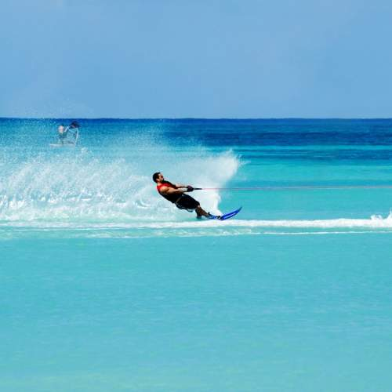

Activités à faire :
Ski nautique :
Randonnée :

La Corse-du-Sud est un département français, partie de la collectivité territoriale de Corse. Son code officiel est le 2A, même si La Poste utilise toujours pour l'ensemble de la Corse le numéro 20 historique. Sa préfecture est Ajaccio.
À la suite de la réforme des territoires de 2015, les deux conseils départementaux de la Corse (celui de Haute-Corse et celui de Corse-du-Sud) ont fusionné le 1er janvier 2018 avec la Collectivité territoriale de Corse, qui exerce déjà les compétences d'une région à statut particulier, pour former la Collectivité de Corse.
EN SAVOIR PLUS SUR LA CORSE DU SUD